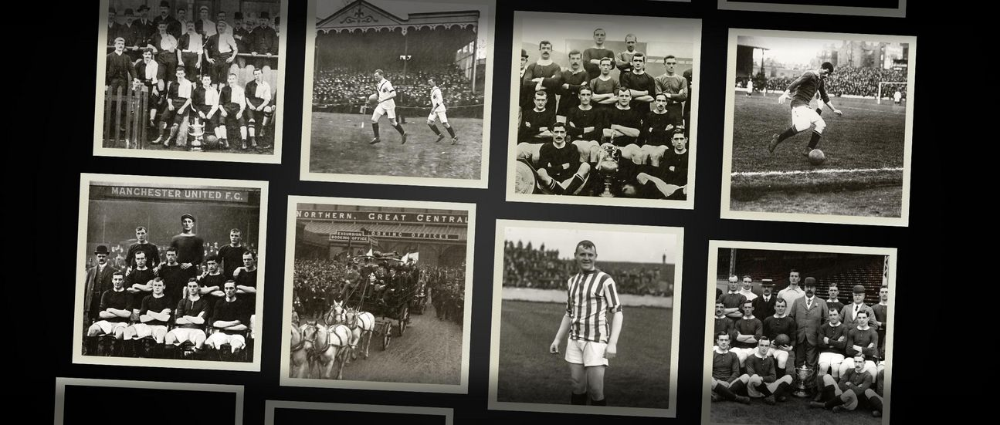
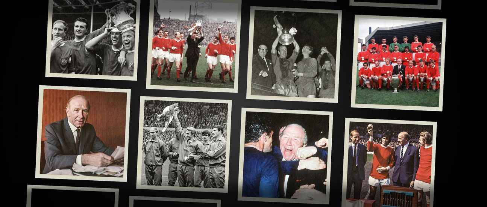
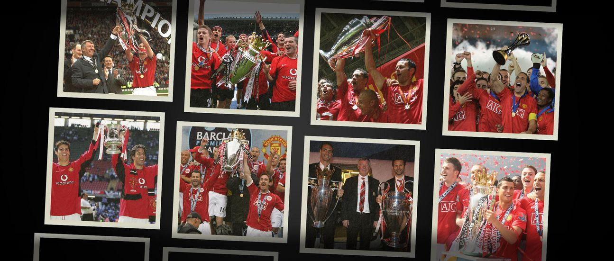
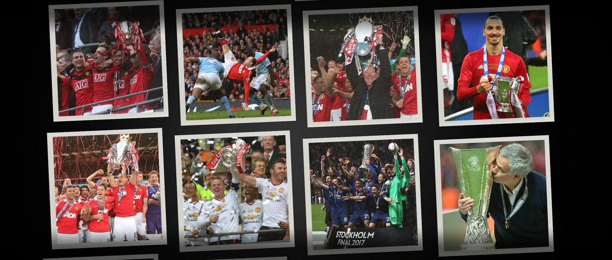

Origins: Newton Heath (1878–1902)
Manchester United began as Newton Heath LYR Football Club in 1878, formed by railway workers from the Lancashire and Yorkshire Railway depot. The early years were difficult: financial struggles, poor facilities, and inconsistent results nearly forced the club into extinction. In 1902, after facing bankruptcy, the club was rescued by local businessmen, renamed Manchester United, and given the iconic red-and-white identity that still represents it today.

Rise Under Ernest Mangnall (1903–1912)
Manchester United’s first major turning point came under manager Ernest Mangnall, who guided the club to its first First Division title in 1908 and its first FA Cup win in 1909. United moved to Old Trafford in 1910, a bold and ambitious step that set the foundation for future greatness. Mangnall’s departure in 1912 slowed momentum, and the club spent decades struggling for consistent success.
Post-War Rebirth and Matt Busby (1945–1969)
After World War II, United transformed under Sir Matt Busby, one of the most influential managers in football history. Busby built a philosophy focused on attacking football and nurturing young talent. This era produced the legendary Busby Babes, a gifted group of homegrown players who dominated English football in the 1950s.

The tragedy of the Munich air disaster in 1958, where eight players lost their lives, devastated the club. Yet Busby rebuilt the team with extraordinary resilience. A decade later, Manchester United became the first English team to win the European Cup in 1968, led by stars like George Best, Bobby Charlton, and Denis Law.
Transition Years (1970s–1980s)
Following Busby’s retirement, the club entered an unstable period with mixed results. While United remained popular and competitive, they struggled to reclaim major league titles. They won several FA Cups—most notably in 1977 and 1985—but lacked the consistency needed to dominate English football.
The Ferguson Era (1986–2013): Dominance Redefined
Everything changed with the arrival of Sir Alex Ferguson in 1986. After a challenging start, Ferguson built one of the greatest dynasties in football history: 13 Premier League titles 5 FA Cups 4 League Cups 2 Champions League titles (1999, 2008) The historic 1999 Treble: Premier League, FA Cup, and Champions League Under Ferguson, United established a culture of winning, youth development, and relentless competitiveness. Players like Ryan Giggs, Paul Scholes, Roy Keane, Eric Cantona, Wayne Rooney, and Cristiano Ronaldo became global icons.

Post-Ferguson Era (2013–Present)
After Ferguson’s retirement in 2013, Manchester United entered a period of rebuilding. A series of managerial changes—David Moyes, Louis van Gaal, José Mourinho, Ole Gunnar Solskjær, and others—brought mixed success. The club has still captured important trophies, including the FA Cup (2016), League Cup (2017, 2023), and Europa League (2017).
United continues to invest heavily in youth, global talent, and modern football structures as it works to return to consistent top-level success. Despite challenges, Manchester United remains one of the world’s most supported and influential football clubs.

Legacy
From its humble railway origins to becoming a global powerhouse, Manchester United’s history is defined by resilience, reinvention, and ambition. With a rich heritage, a passionate fanbase, and an iconic stadium, the club’s story continues to inspire—and the next great chapter is still being written.